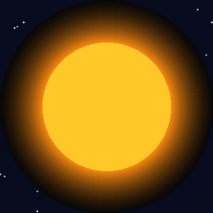
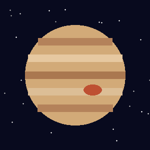

Разделы страницы:
Раздел 1. Земля
Раздел 2. Марс
Раздел 3. Сатурн

Земля — третья планета от Солнца. Это единственная известная планета, на которой есть жизнь.
Среднее расстояние до Солнца — около 150 млн км. Его называют астрономической единицей (а.е.).
Основные данные:
Атмосфера Земли состоит в основном из азота (N2, около 78%) и кислорода (O2, около 21%). Она защищает планету от метеоров и смягчает перепады температуры.

Марс — четвёртая планета от Солнца. Его называют «Красной планетой»: поверхность покрыта пылью с оксидом железа, похожим на ржавчину.
Основные данные:
На Марсе находится гора Олимп — один из самых высоких вулканов в Солнечной системе (высота более 20 км). По поверхности Марса ездили марсоходы, которые фотографировали камни и изучали грунт.

Сатурн — шестая планета от Солнца и вторая по размеру после Юпитера.
Самое известное у Сатурна — его кольца. Они состоят из кусочков льда и камней.
Основные данные:
Сатурн хорошо виден с Земли даже в небольшой телескоп — кольца заметны как «ушки» по бокам планеты.

